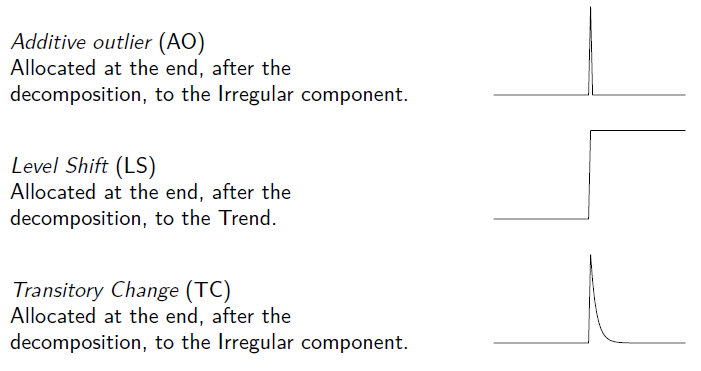
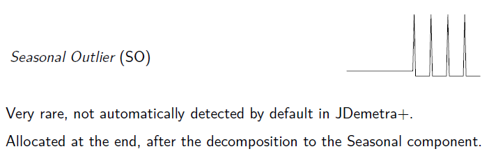
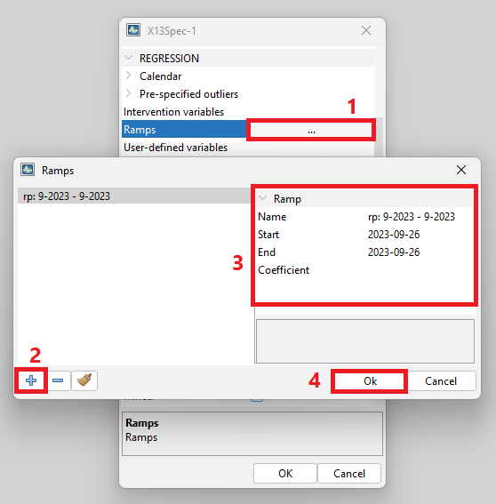

# Outliers in February 2002, for monthly data
library("rjd3toolkit")
ao <- ao_variable(frequency = 12, c(2000, 1), length = 12 * 4, date = "2002-02-01")
ls <- ls_variable(12, c(2000, 1), length = 12 * 4, date = "2002-02-01")
tc <- tc_variable(12, c(2000, 1), length = 12 * 4, date = "2002-02-01")
so <- so_variable(12, c(2000, 1), length = 12 * 4, date = "2002-02-01")Outlier detection and external regressors
In this chapter
The following sections describe
how to generate useful external regressors for improving seasonal adjustment or reg-arima modelling
JDemetra+ solutions for outlier detection and in a time series.
These routines can be used stand alone or as part of a seasonal adjustment process. They can be accessed via the Graphical User Interface (GUI) or [R packages]((#t-r-packs).
How to use the generated regressors, or any user-defined variable, in a seasonal adjustment or reg-arima modelling process is discussed in the pre-treatment chapter for classic SA and SA of High-frequency chapter for infra-monthly data. There you will also find out how to fix the corresponding coefficients and how to allocate the effects to the selected component.
The external regressors described exclude calendar correction which is detailed here
Generating external regressors
Outliers
Types
The following outliers are available for automatic detection


ADD: - specifics for HF data (wo outiler)
Pre-specifying outliers
Outliers are well-defined types of auxiliary variables, therefore when they are used (reg-arima or tramo modelling) they don’t need to be explicitly generated beforehand. Pre-specifying outliers is detailed in chapters on pre-treatment in SA and SA of High-frequency data.
Generating regressors for outliers
Nevertheless, explicit regressors corresponding to outliers can be generated with rjd3toolkit functions for independent use. Further details rjd3toolkit help pages.
Ramps
A ramp effect means a linear increase or decrease in the level of the series over a specified time interval \(t_{0}\) to \(\ t_{1}\). Ramps can overlap other ramps, additive outliers and level shifts. In seasonal adjustment their effected will be allocated to the trend.
Adding ramps to a seasonal adjustment (or reg-arima/tramo) specification happens in one step in GUI as well as in R, where ramp regressors can nevertheless be independently generated.
Adding ramps in GUI
In the specification window

The effect of the ramps is stored in reg_t pre-adjustment series.
Adding ramps in R
Use the function add_ramp
# create a specification from a default specification
init_spec <- rjd3x13::spec_x13("RSA5c")
# add ramp on year 2012
new_spec <- rjd3toolkit::add_ramp(init_spec, start = "2012-01-01", end = "2012-12-01")Generating ramp regressors in R
Use ramp_variable function in rjd3toolkit:
?ramp_variable
# Ramp variable from January 2001 to September 2001 for a monthly series
rp <- ramp_variable(frequency = 12, c(2000, 1), length = 12 * 4, range = c(13, 21))
# Or equivalently
rp <- ramp_variable(12, c(2000, 1), length = 12 * 4, range = c("2001-01-01", "2001-09-02"))
plot.ts(rp)More details rjd3toolkit pages.
Intervention variables
Intervention variables are modelled as any possible sequence of ones and zeros, on which differencing (regular and seasonal) can be applied.
Adding intervention variables to a seasonal adjustment (or reg-arima/tramo) specification happens in one step when using the GUI, whereas two steps are required in R: generating the regressors and the adding them as an user-defined variable.
Adding intervention variables in GUI
step 1:
{kind=link}
Step 2:
{kind=link}
Generating intervention variables in R
Using intervention_variable function in rjd3toolkit
library("rjd3toolkit")
? intervention_variable
iv <- intervention_variable(
frequency = 12, start = c(2000, 1), length = 60,
starts = "2001-01-01", ends = "2001-12-01"
)
iv
plot(iv)
iv <- intervention_variable(12, c(2000, 1), 60,
starts = "2001-01-01", ends = "2001-12-01", delta = 1
)
iv
plot(iv)
iv <- intervention_variable(12, c(2000, 1), 60,
starts = "2001-01-01", ends = "2001-12-01",
delta = 0, seasonaldelta = 1
)
iv
plot(iv)More details rjd3toolkit help pages.
Adding intervention variables in R
Intervention variables can be added to a specification like any other external regressor using the add_usrdefvar. They also need to be declared in a “context” using the modelling_context function.
# creating one or several external regressors (TS objects),
# which will be gathered in one or several groups
iv1 <- intervention_variable(12, c(2000, 1), 60,
starts = "2001-01-01", ends = "2001-12-01"
)
iv2 <- intervention_variable(12, c(2000, 1), 60,
starts = "2001-01-01", ends = "2001-12-01", delta = 1
)
# regressors as a list of two groups (lists) reg1 and reg2
vars <- list(reg1 = list(iv1 = iv1), reg2 = list(iv2 = iv2))
# to use those regressors, input : name=reg1.iv1 and name=reg2.iv2 in add_usrdefvar function
# creating the modelling context
my_context <- modelling_context(variables = vars)
# customize a default specification
init_spec <- rjd3x13::spec_x13("RSA5c")
# regressors have to be added one by one
new_spec <- add_usrdefvar(init_spec, name = "reg1.iv1", regeffect = "Trend")
new_spec <- add_usrdefvar(new_spec, name = "reg2.iv2", regeffect = "Trend", coef = 0.7)
# modelling context is needed for the estimation phase
# raw series
y <- rjd3toolkit::ABS$X0.2.09.10.M
sa_x13 <- rjd3x13::x13(y, new_spec, context = my_context)Periodic dummies and contrasts
Generating regressors in R
dummies :as many time series as type of periods in a year (4,12)
## periodic dummies : add explanations and examples
p <- periodic.dummies(4, c(2000, 1), 60)
head(p)
class(p)
q <- periodic.contrasts(4, c(2000, 1), 60)
q[1:9, ]Trigonometric variables
Correction for stable seasonality.
Generating in R
User-defined variables
User defined variables are simply time series used as explanatory regressors in the RegARIMA and the TRAMO models. Although JDemetra+ allows the user to indicate any time series as a variable to avoid misleading or erroneous results, the following rules should be kept:
- User-defined regression variables are used for measuring abnormalities and therefore they should not contain a seasonal pattern.
- JDemetra+ assumes that user-defined regressors are already in an appropriately centred form.
Therefore the mean of each user-defined regressor needs to be subtracted from the regressor or means for each calendar period (month or quarter) need to be subtracted from each of the user-defined regressors.
JDemetra+ considers two kinds of user-defined regression variables:
- Static variables, usually imported directly from external software (by drag/drop or copy/paste). The observations for static variables cannot be changed. The only way to update static series is to remove them from the list and to re-import them with the same names.
- Dynamic variables that are imported into the Variables panel by dragging and dropping series from a browser of the application, available in the Providers window. Dynamic variables are automatically updated each time the application is re-opened. Therefore, it is a convenient solution for creating user-defined variables.
In GUI
To create a dynamic variable first right-click on the Variables node in the Workspace window and chose the option New.

Next, double click on the newly created Vars-1 item to display it in the Results panel. By default, JDemetra+ uses the conventions Vars_#number to name the tabs under the Variables node.

Then, go to Providers window and open your file that contains external variables following the instructions provided here. Drag and drop your external regressors from the Providers window to the Vars-1 window.

The original name of the series is recorded in the Description column of the Variables window.

In order to rename the series in the Variables window, right click on the series and chose Rename.

In R
Outlier Detection
With Reg Arima models
Within an SA processing
In a seasonal adjustment estimation or reg-arima modelling outliers are detected by default. This process can be customized by selecting the type of outliers to be taken into account and the critical values to be used for selection. See the relevant chapters on SA and SA of High-frequency data
Stand alone
In version 3;x, R packages rjd3x13 and rjd3tramoseats provide functions for detecting outliers with reg-arima (tramo) algorithms.
Example using regarima_outliersin rjd3x13:
library(rjd3x13)
?regarima_outliers
regarima_outliers(rjd3toolkit::ABS$X0.2.09.10.M,
order = c(1, 1, 1), seasonal = c(0, 1, 1),
mean = F,
X = NULL, X.td = NULL,
ao = T, ls = F, tc = T, so = T, cv = 4
)Example wit rjd3tramoseats::tramo_outliers
library(rjd3tramoseats)
?tramo_outliers
tramo_outliers(rjd3toolkit::ABS$X0.2.09.10.M,
order = c(1, 1, 1), seasonal = c(0, 1, 1),
mean = F,
X = NULL, X.td = NULL,
ao = T, ls = F, tc = T, so = T, cv = 4
)Specific TERROR tool
Up coming content
With structural models (BSM)
Up coming content